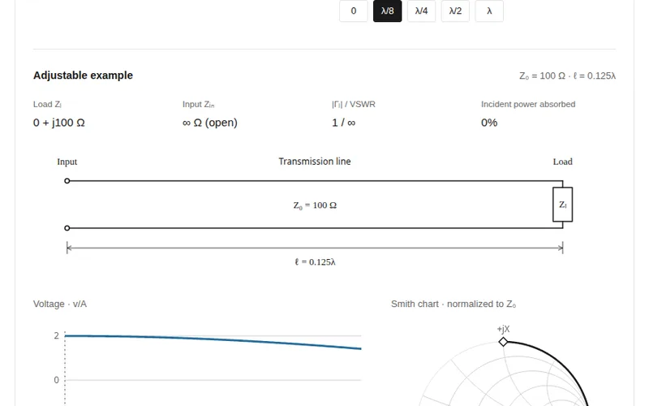
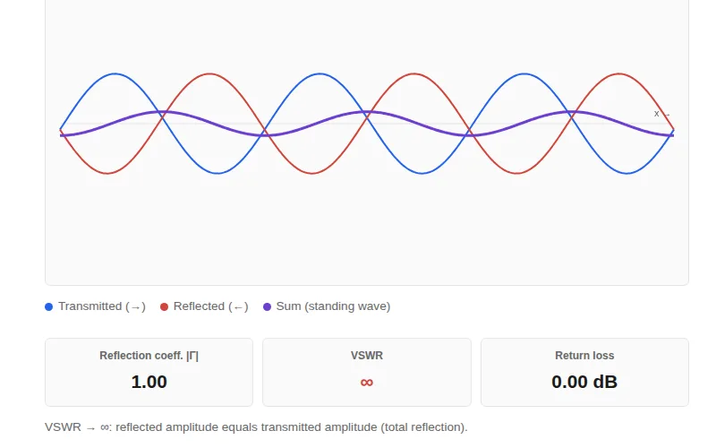
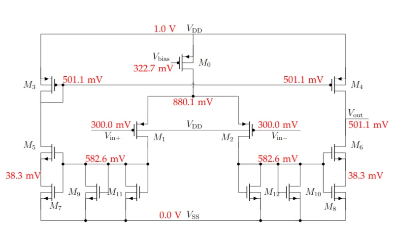
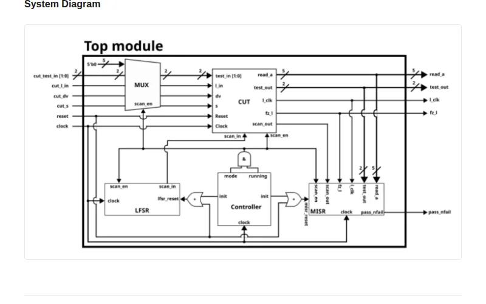
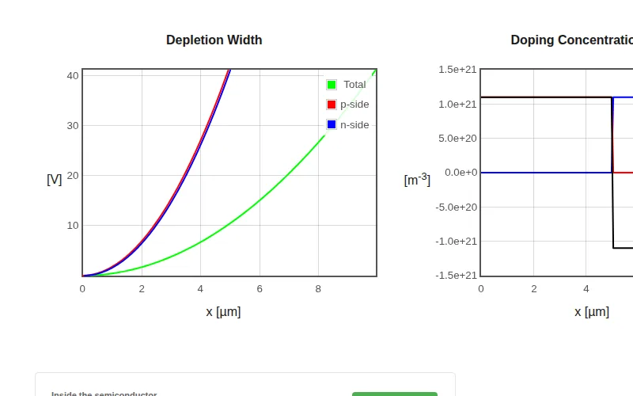
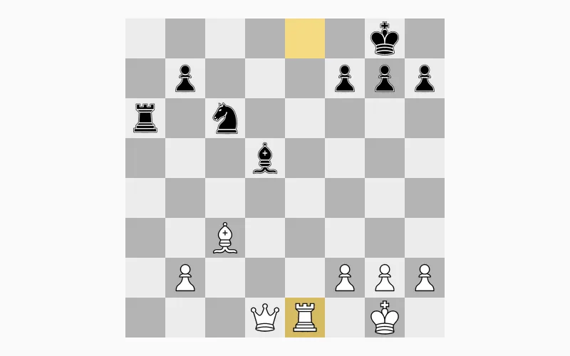
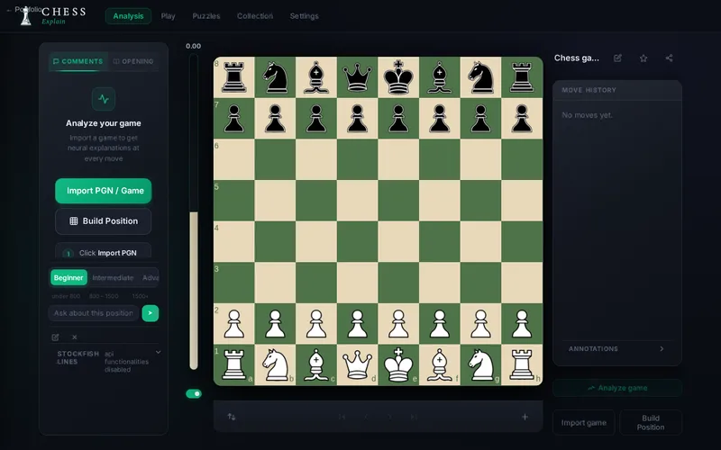
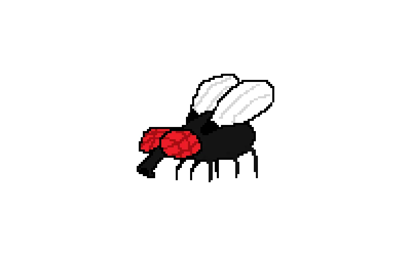

Projects
Note: some projects contain AI-generated content.
-

Transmission Line ExplorerImpedance transformation, voltage and current waves, field energy and Smith charts, with five load examples. -

Standing Wave & VSWRAnimated incident and reflected waves, with VSWR, reflection coefficient and return loss. -

Low-gm OTAA 1 V / 1 μA transconductance amplifier with a weak-inversion input pair. -

BIST-per-ScanScan-chain built-in self-test with LFSR pattern generation and MISR signature analysis. -

PN Junction Depletion WidthDepletion width and fields of a pn-junction for arbitrary doping profiles. -

Chess Puzzle GeneratorEndless random mate-in-one puzzles, generated in the browser while you solve. -

Chess CoachAnalysis, puzzles and coaching. Static demo: API-backed features are disabled. -

FlygameJump on flies, buy a shotgun, survive the swarm. A childhood project, rebuilt.